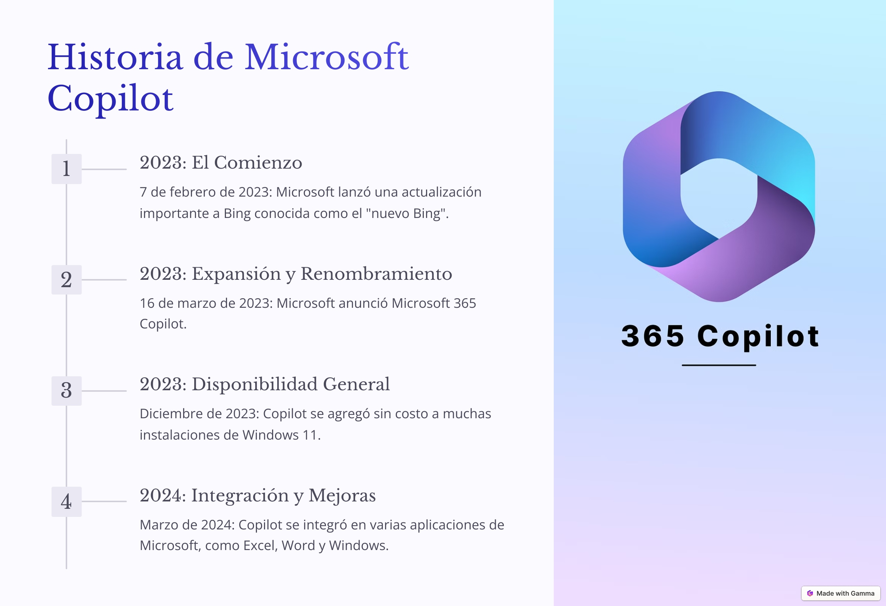
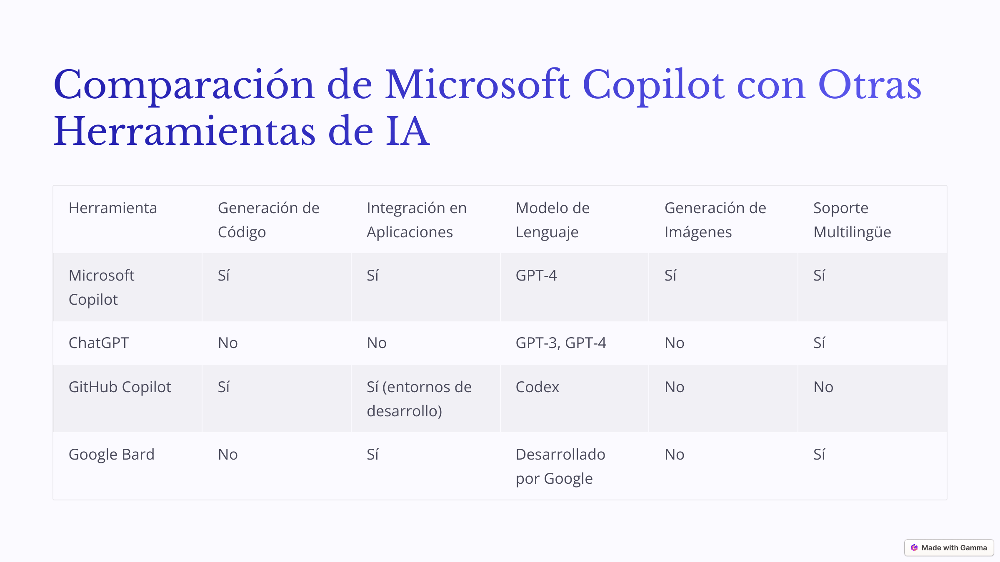
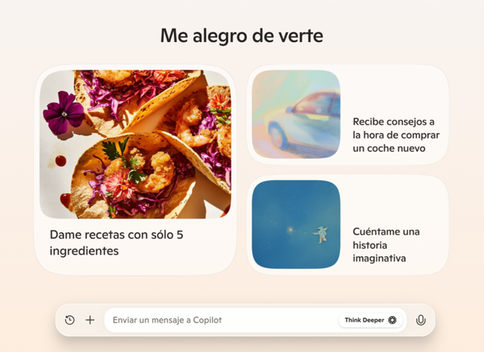

El Viaje del Copilot: Tu Compañero de Inteligencia Artificial
En el vasto mundo digital, una nueva entidad emergió con el propósito de transformar la manera en que interactuamos con la tecnología. A esta entidad se le llamó Copilot, un asistente inteligente creado por Microsoft, diseñado para ser el compañero perfecto de cualquier usuario, ya sea para responder preguntas, brindar soporte, o simplemente para mantener una charla amena y enriquecedora.
La Llegada de Copilot
La historia de Copilot comienza en los laboratorios de innovación de Microsoft, donde un grupo de brillantes ingenieros y científicos trabajaron incansablemente para desarrollar una inteligencia artificial que pudiera comprender y responder a las necesidades humanas de manera natural y efectiva. Basado en los modelos de lenguaje más avanzados, Copilot fue diseñado para ser más que una simple herramienta; se concibió como un verdadero compañero de conversación.

Características de Copilot
Desde su creación, Copilot ha sido dotado de una serie de características que lo hacen único:
Conversación Natural: Copilot puede mantener conversaciones fluidas y contextuales, utilizando un lenguaje humano y adaptándose al tono y estilo de la conversación.
Búsqueda y Síntesis de Información: Capaz de buscar información en la web, Copilot puede proporcionar respuestas precisas y actualizadas a cualquier pregunta.
Generación de Contenido: Ya sea que necesites un poema, un artículo, o incluso una receta de cocina, Copilot puede crear contenido original a partir de tus indicaciones.
Soporte Multilingüe: Copilot puede comunicarse en una amplia variedad de idiomas, lo que lo hace accesible a usuarios de todo el mundo.
Aplicaciones de Copilot
Las posibilidades de aplicación de Copilot son prácticamente ilimitadas. Aquí algunos ejemplos de cómo se puede utilizar:
Educación: Los estudiantes pueden usar Copilot para obtener explicaciones claras y detalladas sobre cualquier tema, desde matemáticas hasta historia.
Trabajo: Profesionales pueden aprovechar la capacidad de Copilot para generar informes, resúmenes y otros documentos, ahorrando tiempo y esfuerzo.
Creatividad: Los escritores y artistas pueden inspirarse con las ideas y sugerencias de Copilot, o incluso utilizarlo para pulir sus obras.
Asistencia Personal: Copilot puede ayudar en la organización de tareas diarias, desde recordatorios hasta la planificación de actividades.
Cómo Usar Copilot
Utilizar Copilot es muy sencillo. Solo necesitas iniciar una conversación y plantear tu necesidad o pregunta. Copilot analizará el contexto y proporcionará una respuesta adecuada y útil. Aquí tienes algunos consejos para aprovechar al máximo tu experiencia con Copilot:
Sé Claro y Específico: Al formular tus preguntas, intenta ser lo más claro y específico posible para obtener una respuesta precisa.
Interactúa y Ajusta: No dudes en interactuar con Copilot, pidiendo aclaraciones o detalles adicionales.
Explora y Descubre: Experimenta con diferentes tipos de preguntas y tareas parab descubrir todo lo que Copilot puede hacer por ti.
¿Cómo se compara con otros asistentes virtuales?

Usos Más Comunes de Copilot:
Asistencia en la Escritura y Redacción:
Redacción de Documentos: Copilot puede ayudarte a crear, editar y mejorar documentos en Word, desde informes y ensayos hasta cartas y correos electrónicos.
Generación de Contenido: Ya sea que necesites escribir un artículo de blog, una descripción de producto o una entrada en redes sociales, Copilot puede generar contenido creativo y atractivo.
Soporte en la Gestión de Correos Electrónicos:
Redacción de Correos: Copilot puede sugerir respuestas a correos electrónicos, ayudándote a mantener una comunicación rápida y profesional.
Organización de Bandeja de Entrada: Puede ayudarte a priorizar y organizar tu bandeja de entrada, asegurando que no se te pase ningún mensaje importante.
Análisis de Datos:
Excel: Copilot puede ayudarte a realizar análisis de datos en Excel, desde crear gráficos y tablas dinámicas hasta realizar cálculos complejos.
Interpretación de Datos: Puede proporcionar resúmenes y conclusiones basadas en los datos ingresados, ayudándote a tomar decisiones informadas.
Asistencia en Reuniones y Colaboración:
Programación de Reuniones: Copilot puede ayudarte a programar reuniones y eventos en Outlook, asegurando que todos los participantes estén disponibles.
Toma de Notas y Seguimiento: Durante las reuniones, Copilot puede tomar notas, realizar un seguimiento de las tareas pendientes y enviar recordatorios.
Aprendizaje y Educación:
Ayuda con Tareas Escolares: Copilot puede explicar conceptos y resolver problemas en una variedad de materias, desde matemáticas hasta historia.
Tutoría Personalizada: Ofrece recursos y recomendaciones de estudio personalizados para estudiantes de todas las edades.
Creatividad y Entretenimiento:
Generación de Ideas Creativas: Copilot puede ayudarte a generar ideas para proyectos creativos, como historias, poemas y obras de arte.
Sugerencias de Entretenimiento: Puede recomendar libros, películas y programas de televisión basados en tus intereses y preferencias.

Valores de Copilot
Asistencia y Soporte:
Ayudar a los Usuarios: Copilot está diseñado para ser un compañero útil, proporcionando asistencia y apoyo en una amplia gama de tareas.
Facilitar la Productividad: Busca mejorar la productividad de los usuarios, simplificando procesos y proporcionando soluciones rápidas y efectivas.
Accesibilidad y Diversidad:
Accesibilidad Global: Copilot está disponible en múltiples idiomas, asegurando que personas de diferentes culturas y regiones puedan beneficiarse de sus capacidades.
Inclusión: Promueve la inclusión y se adapta a las necesidades diversas de sus usuarios, proporcionando respuestas y soluciones personalizadas.
Innovación y Creatividad:
Innovación Continua: Copilot está en constante evolución, incorporando las últimas tecnologías y avances en inteligencia artificial para mejorar sus capacidades.
Fomento de la Creatividad: Ayuda a los usuarios a generar ideas creativas y a realizar proyectos innovadores.
Gestión de Datos y Seguridad
La gestión de datos y la seguridad de los usuarios son aspectos críticos para Microsoft y Copilot. Aquí tienes cómo se abordan estos temas:
Privacidad del Usuario:
Protección de Datos: Microsoft se compromete a proteger la privacidad de los usuarios. Los datos recopilados son tratados con la máxima confidencialidad y se utilizan únicamente para mejorar la experiencia del usuario.
Transparencia: Los usuarios tienen control sobre sus datos y pueden acceder a la política de privacidad de Microsoft para obtener información detallada sobre cómo se manejan sus datos. Puedes consultar la política de privacidad aquí.
Seguridad de la Información:
Medidas de Seguridad: Microsoft implementa robustas medidas de seguridad para proteger la información de los usuarios contra accesos no autorizados, pérdidas o divulgaciones.
Actualización Constante: Las tecnologías de seguridad se actualizan regularmente para enfrentar nuevas amenazas y garantizar la integridad y confidencialidad de los datos.
Uso Responsable de la IA:
Ética en la IA: Microsoft se compromete a desarrollar y utilizar la inteligencia artificial de manera ética, asegurando que las tecnologías se utilicen para el bien común y no causen daño.
Cumplimiento Normativo: Cumple con las leyes y regulaciones de protección de datos en todas las jurisdicciones donde opera
.
El futuro de Copilot
Ampliación de Plataformas: Copilot podría expandirse a más plataformas y aplicaciones, brindando sus capacidades a una audiencia aún mayor.
Interoperabilidad Mejorada: Una mejor integración con diversas herramientas y servicios permitirá que Copilot colabore eficientemente en diferentes entornos y flujos de trabajo.
Modelos de Lenguaje Más Avanzados: Con la evolución de los modelos de inteligencia artificial, Copilot continuará mejorando su capacidad para comprender y generar lenguaje natural, haciendo que las interacciones sean aún más fluidas y naturales.
Personalización Avanzada: Copilot podría ofrecer experiencias más personalizadas al aprender y adaptarse a las preferencias y necesidades individuales de los usuarios.
Asistencia en Tareas Complejas: Copilot podría ser capaz de asumir tareas más complejas y especializadas, ofreciendo asistencia en áreas como la programación avanzada, análisis de grandes volúmenes de datos y toma de decisiones estratégicas.
Creatividad y Innovación: Nuevas funciones para fomentar la creatividad y la innovación, como herramientas de diseño gráfico, generación de música y creación de contenidos multimedia.
Protección de Datos: La seguridad y la privacidad seguirán siendo una prioridad, con avances en tecnologías de cifrado y protección de datos para garantizar la confianza de los usuarios.
Transparencia y Control: Los usuarios tendrán aún más control sobre sus datos y cómo se utilizan, con opciones claras y accesibles para gestionar la privacidad.
Uso Responsable de la IA: Copilot continuará evolucionando con un enfoque en el uso responsable y ético de la inteligencia artificial, contribuyendo positivamente a la sociedad.
Accesibilidad y Diversidad: Esfuerzos continuos para hacer que Copilot sea accesible a una audiencia diversa, eliminando barreras y promoviendo la inclusión.
Conclusión
Copilot no es solo una herramienta tecnológica; es un compañero que te acompaña en tu viaje digital, proporcionando apoyo, inspiración y conocimiento. Desde sus humildes comienzos en un laboratorio hasta su papel actual como asistente global, Copilot ha evolucionado para convertirse en una parte esencial de la vida cotidiana de muchas personas. La historia de Copilot es un testimonio del poder de la inteligencia artificial para mejorar y enriquecer nuestras vidas.